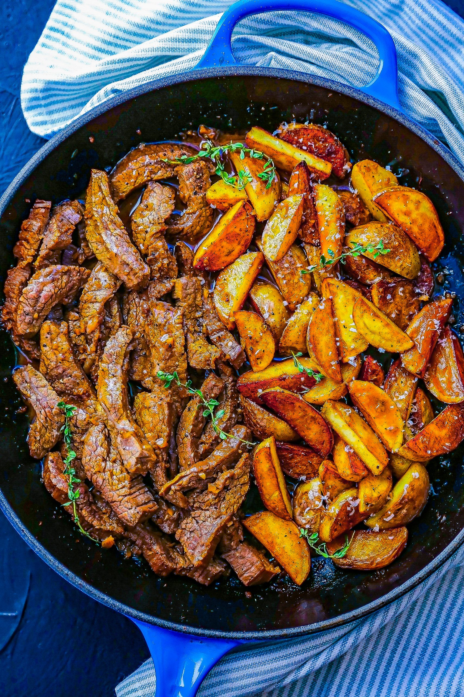

Garlic Butter Steak and Potatoes Skillet

The best steak and potatoes recipe you'll ever have - Simple and so flavorful!
Ingredients
- 1 1/2 lb (650g) flank steak, sliced against the grain
- 1 1/2 lb (650g) baby yellow potatoes, quartered
- 1 tablespoon olive oil
- 3 tablespoons butter, divided
- 5 garlic cloves, minced
- 1 teaspoon fresh thyme, chopped
- 1 teaspoon fresh rosemary, chopped
- 1 teaspoon fresh oregano, chopped
- Salt and fresh cracked pepper
- Crushed red chili pepper flakes, optional
- 1/3 cup soy sauce
- 1 tablespoon olive oil
- 1 tablespoon hot sauce (we used Sriracha)
- Fresh cracked pepper
Directions
- In a large bowl, combine the steak strips with
soy sauce, olive oil, pepper, and hot sauce. Set
aside to marinate while you cook potatoes.
- In a large skillet over medium-high heat,
mix 1 tablespoon olive oil and 1 tablespoon
butter. When butter is melted, add potatoes.
Cook for about 4 minutes, stir and cook an
additional 4-5 minutes until potatoes are
golden and fork tender. Transfer to a plate
and set aside.
- Keep the same skillet over medium heat and add
remaining 2 tablespoons butter, garlic, red chili
pepper flakes, and fresh herbs. Lay the steak
strips in one layer in the skillet, keeping the
drained marinade for later. Cook on each side for
1 minute each, until nicely browned - adjust timing
depending on how you like your steak.
- Right before the steak is done, you can stir in
the reserved marinade if you like, and cook for
one minute. Add the potatoes back to the pan and
heat through. Adjust seasoning with salt and
pepper if necessary.
- Remove from heat and serve immediately, garnished
with more crushed chili pepper, fresh herbs, and
a sprinkle of parmesan cheese over the potatoes
if you like. Enjoy!
Original recipe found on eatwell101